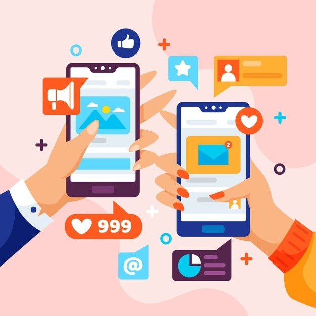
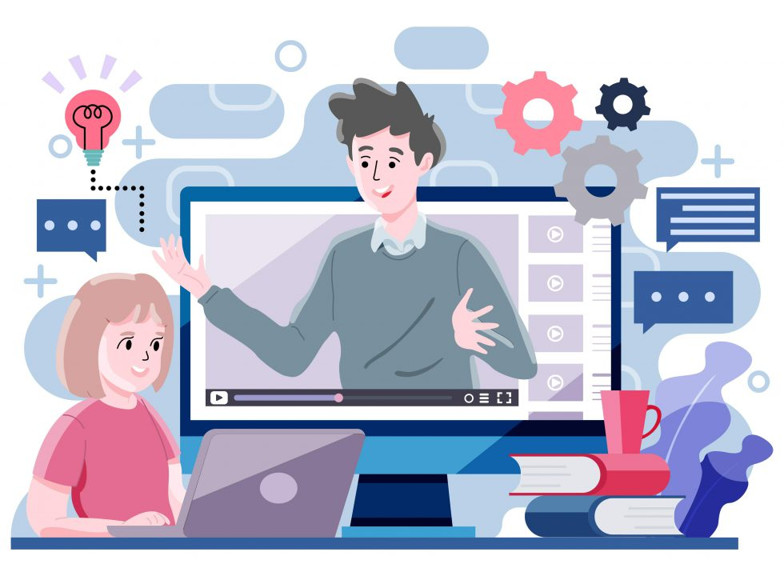

La tecnología web en nuestra vida diaria
La comunicación en la era digital
Las tecnologías web han transformado nuestra manera de comunicarnos, permitiéndonos estar conectados con personas de diferentes partes del mundo mediante redes sociales, videollamadas y mensajes instantáneos. Esto ha facilitado el intercambio de información y ha permitido mantener relaciones personales sin importar la distancia. Sin embargo, considero que también hemos permitido que la tecnología ocupe demasiado espacio en nuestra vida cotidiana, llegando en ocasiones a reemplazar la comunicación presencial y generar una dependencia de los medios digitales.
Video: Comunicación en la era digital
El impacto de las tecnologías web en la educación
Las tecnologías web han transformado la educación al permitir que las personas accedan a oportunidades de aprendizaje sin importar su ubicación geográfica. Gracias a las plataformas educativas, las clases virtuales y los recursos digitales, actualmente es posible estudiar en una universidad de otro país sin necesidad de trasladarse. Sin embargo, aunque estas tecnologías han facilitado el acceso a la educación, también presentan desafíos, ya que no todas las personas cuentan con una conexión estable a Internet o con los dispositivos necesarios para aprovechar estas oportunidades.

